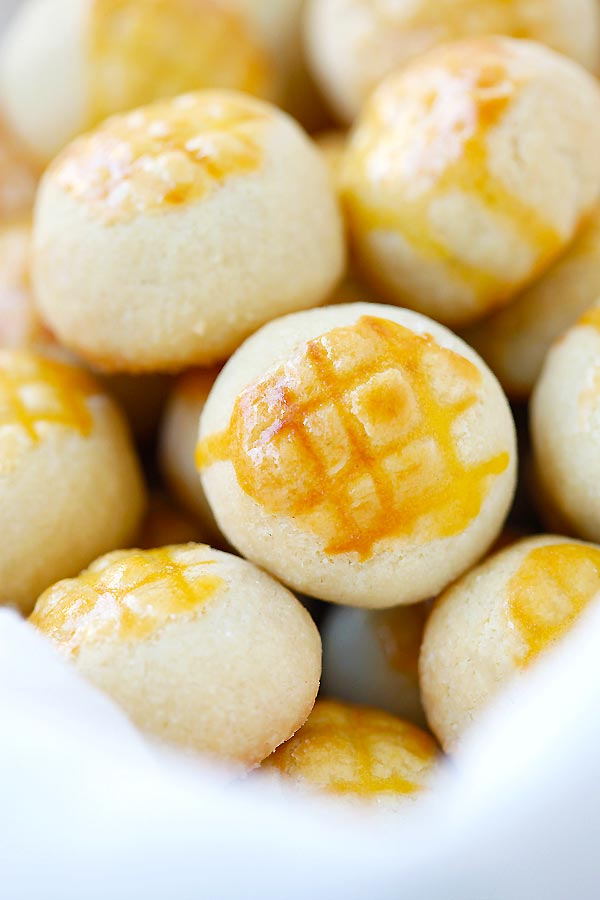

Tart Nenas

Delicious golden-brown pineapple bites melting in your mouth
Prep time: 2 hours
Cook time: 20 minutes
Total time: 2 hours 20 minutes
Yield: 12 people
This traditional dessert is an utterly delicious pastry that's super buttery
and crumbly, the addicting pineapple filling simply delightful. Pineapple tarts,
or Tat Nenas (as they're called in Malaysia), can be found all over
Southeast Asia in several different forms.
Ingedients:
General
- 3 sticks (350g) unsalted butter at room temp.
- 3 1/2 oz. (100g) sweetened condensed milk
- 2 egg yolks
- 18 oz. (500g) all-purpose flour or plain flour
Pineapple filling
- 2 whole pineapples
- 1/2 tablespoon cloves (optional)
- 1 to 1 1/2 cups (250 - 300g) sugar
- 1 tbsp lemon juice
Egg wash
- 2 egg yolks
- 1/4 tsp condensed milk
- 1/2 tsp oil
Steps:
-
Cut the stalk off the pineapple and follow by the skin. Make sure all divits are removed. Slice the pineapple flesh into pieces and blend in a blender until they become puree. Add the pineapple puree and cloves to a non-stick pot and cook on medium heat, constantly stirring to avoid burning. When the pineapple is almost dry, add the sugar and lemon juice, stir to combine well. Lower the heat to simmer and continue to stir until the pineapple filling turns golden in color and becomes very sticky. Transfer the pineapple filling out, remove the cloves and chill in the fridge for 30 minutes.
-
Cream the butter and condensed milk until light and fluffy. Add in the egg yolk one at a time, and beat until well combined. Mix in the flour slowly to form the pastry dough. The dough is ready when it no longer sticks to your hands.
-
Prepare the egg wash by mixing all the ingredients together in a small bowl.
-
Divide the pineapple filling and dough into 100 portions. Roll them both into balls. To wrap, use your palms to roll each dough and then flatten it.
-
Add a pineapple ball in the middle and fold the edges of the dough up to cover the filling.
-
Finish it off by rolling it into a round ball.
-
Place the pineapple cookie on a baking sheet lined with parchment paper. Using the back of a paring knife, cut the criss-cross shape on the cookie, and brush the top of the cookie with the egg wash, twice. Repeat the same until all ingredients are used up.
-
Bake in a preheated oven at 330℉ (165℃) for about 20-22 minutes or until they turn golden brown. Transfer them out and cool on a wire crack before storing in an airtight container.
Extra filling can be kept in the fridge to store. You can make more tarts or
you can just eat the remaining filling with bread.
Back to Top
Return to Home